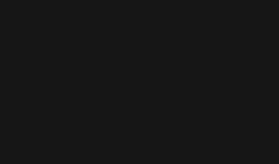

Kanban Board is a brilliant visual tool that gives an overview of the
current work status and simplifies team communication. Regardless of
your team members' location, on a daily basis you are all able to
visualize, control and optimize workflow and collaborate in real-time.
This board is a simplified version that contains only your tasks. In
real projects there will be different tasks for every team member. Feel
free to drag and drop tasks in columns depending on their completion.
to do
doing
done
set user name and email for git
clone a remote repository using URL + access token:
https://access-token@github.com/dev-team/project-n.git
set the column-gap in box-div to 20px
stage changes made in styles.css
commit changes with the message "gap corrected"
push new changes to branch "main"
click on help button if you need
git status (current state of local repository)
git status command is showing:
- your current branch + its status;
- changes to be committed.
Basically it's a representation of a staging area in GIT.
on branch main
no commits yet
nothing to commit
git log (commits history)
git commit command is showing all commits in a branch with their:
- hash (aka unique ID of a commit that identifies: the specific changes,
when the changes were made, who created the changes);
- author of a commit;
- date and time when commit was made;
- commit's message.
fatal: your current branch "main" does not have any commits yet
no commits yet
nothing to commit
branches visualization
A helpful feature for showing a current repository tree with all the
branches.
Squares - commits with their hash;
green square - branch name
HEAD - you can think of the HEAD as the "current branch". When you
switch branches with git checkout, the HEAD revision changes to point to
the tip of the new branch.

files GIT migration
This table represents migration of files starting from your local
working directory to remote repository. It is recommended to pay
attention to changes in this table to see what GIT is doing when certain
git commands are executed:
git add - to stage files/changes; (preparing for commit)
git commit - to locally commit files; ("take a snapshot of current
files' state")
git push - to push files to remote repository; (upload new files/changes
to a remote repository)
git pull - to incorporate changes from a remote repository into the
current branch; (download new changes/files to local machine)
working directory(local)
staging area
committed
GitHub repo(remote)
-
-
-
-
working area
This is a very simplified representation of a code editor.
terminal
Terminal for running git commands. Assume that you are already at the
root of your workspace